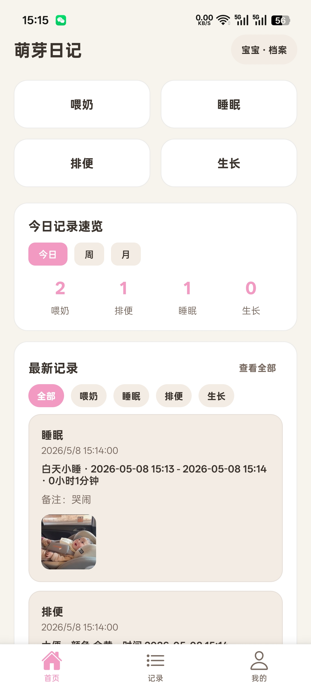
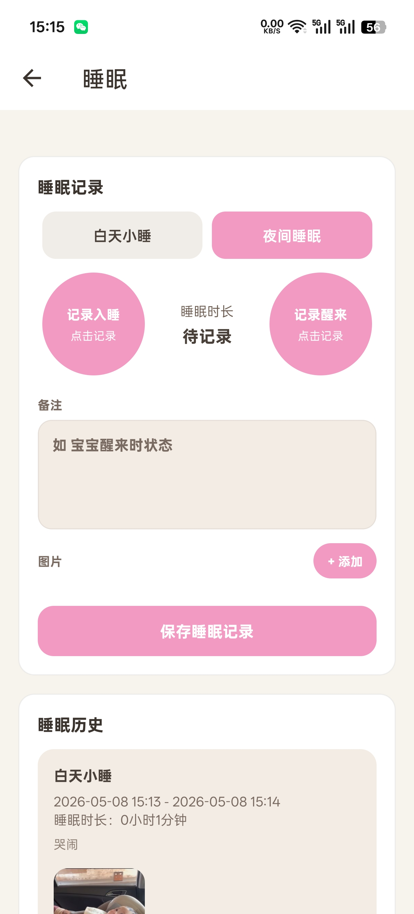
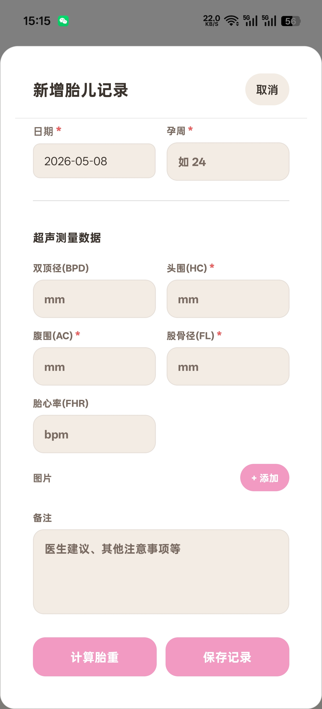

萌芽日记APP用途在于新手父母在宝宝出生后，需记录大量基础信息、喂养细节、日常状态及生长发育情况，当前多通过纸质笔记、备忘录等方式记录，存在信息零散、查找不便、统计困难、无法直观追踪成长趋势等问题。本APP旨在整合宝宝出生至成长各阶段的核心记录需求，提供便捷、全面、直观的记录工具，帮助父母系统化留存宝宝成长痕迹，同时为宝宝体检、就医提供精准的历史数据支撑，减轻育儿记录负担。
喂养记录
记录母乳、配方奶、辅食、饮水量，自动统计喂养间隔，支持夜奶专项记录。
日常日志
便捷记录尿布状态、睡眠时段、哭闹情况及日常护理各类事项。
健康监测
追踪体温变化、皮肤状况、每日健康状态，可添加备注详细记录。
成长时间线
长期记录体重、身长 / 身高、头围，留存宝宝发育里程碑事件。
智能提醒
自定义疫苗接种、儿保体检、成长录入、日常护理等事项提醒。
数据管理
支持数据备份、导出与记录管理，安全长久留存育儿所有数据。
#iOS
cd ios && xcodebuild build
-workspace app.xcworkspace
-scheme app
-configuration Release
-sdk iphoneos
-destination 'generic/platform=iOS'
CODE_SIGNING_ALLOWED=NO
cd /tmp && rm -rf Payload && mkdir Payload &&
cp -R ~/Library/Developer/Xcode/DerivedData/app-*/Build/Products/Release-iphoneos/app.app Payload/ &&
zip -r9 GameHub.ipa Payload/ >/dev/null &&
mv GameHub.ipa ~/GameHub/
# 快捷变更版本号
## 统一用脚本自动改版本
```txt
发版前：
自动同时修改：
app.json
ios/app/Info.plist
例如：
#!/bin/bash
VERSION=$1
BUILD=$2
echo "Updating to version $VERSION ($BUILD)"
# app.json
sed -i '' "s/\"version\": \".*\"/\"version\": \"$VERSION\"/" app.json
sed -i '' "s/\"versionCode\": [0-9]*/\"versionCode\": $BUILD/" app.json
sed -i '' "s/\"buildNumber\": \".*\"/\"buildNumber\": \"$BUILD\"/" app.json
# iOS plist
/usr/libexec/PlistBuddy -c "Set :CFBundleShortVersionString $VERSION" ios/app/Info.plist
/usr/libexec/PlistBuddy -c "Set :CFBundleVersion $BUILD" ios/app/Info.plist
echo "Done."
./release.sh 2.0.0 12
自动：
version: 2.0.0
versionCode: 12
CFBundleShortVersionString: 2.0.0
CFBundleVersion: 12